- Extracting MPEG-2 vedio files from Standard DVD
- DVD to VCD/SVCD Conversion
- DVD to DivX(MPEG-4) Compression
- Sound Track Compression
- Keywords :: Television , MPEG-1, MPEG-2, VCD,SVCD DVD, DivX。
【 0. Background 】
- DVD 影音光碟 : 亂世佳人 ( Gone with the Wind )，
片長 232 分，隱藏式字幕，中文 / 英文 / 馬來文
- CPU 規格 : Intel Pentium Celeron 1.8 G
- 使用軟體 :
- Smart Ripple 2.41
- DVDx 2.2
- FlasKMPEG 0.7.8.39
- Virtual Dub 1.5.2
- Windows Media Player 9.00.00.2980
- Neruo 5.5
- 使用編解碼器 :
- DivX Codec 5.05
- MPEG Layer 3
- Microsoft MPEG-4
【 1. Extracting MPEG-2 vedio files from Standard DVD
】
- Download and Install Smart Ripper
- 網站下載 Smart Ripper (
http://www.afterdawn.com/general/disclaimers/decss_disclaimer.cfm?software_id=251&mirror=184&x=56&y=13﹚，
以下以 2.41進行操作 。
- 解壓縮後，直接點選
，進入 Smart Ripper 。
- 網站下載 Smart Ripper (
http://www.afterdawn.com/general/disclaimers/decss_disclaimer.cfm?software_id=251&mirror=184&x=56&y=13﹚，
- Using Smart Ripper extract DVD vedio
files to Hard Disk
- 檢視由 Smart Ripper 顯示的
DVD 訊息 ，由『 Target 』選擇 儲存的目的，再選『Start 』可 將 DVD 轉到硬碟內。
- .vob 檔案中即儲存了主要影片檔案的影像與音訊資訊。
- 檢視由 Smart Ripper 顯示的
DVD 訊息 ，由『 Target 』選擇 儲存的目的，再選『Start 』可 將 DVD 轉到硬碟內。
【 2. DVD to VCD/SVCD Conversion 】
- Download and Install DVDx
- 網站下載 DVDx ( http://prdownloads.sourceforge.net/dvdx/DVDx_22_setup.exe﹚，以下以
DVDx2.2版本進行操作 。
- 直接點兩下安裝後，以 『 程式集 / DVDx / DVDx 』開啟DVDx。
- 網站下載 DVDx ( http://prdownloads.sourceforge.net/dvdx/DVDx_22_setup.exe﹚，以下以
DVDx2.2版本進行操作 。
- Convert the first 5000 frames to VCD
format ( 352 x 240 NTSC )
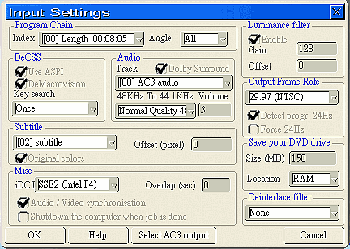
■ 1. DVDx -- VCD Format Input Settings
DVDx 會自動抓取影片本身 Property，打開
『 Steeings / Input Setting 』確定
Output Frame Rate 設為 NTSC 格式
RAM Size(MB) 依照你 RAM 的大小來設定，
我的 RAM 有 320MB ，設為 150MB，來幫助轉檔。
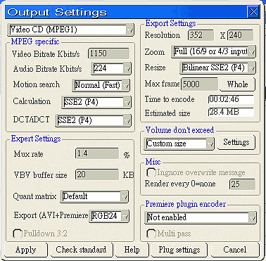
■ 2. DVDx -- VCD Format Onput Settings
點選『 Steeings / Onput Setting 』 ，確定將
轉換格式為『 Video CD (MPEG1) 』，
『 Resolution 』設成 352 X 240 ，
『 Max frame 』設成 5000 。
之後就回 DVDx ，按下 『 Encode 』，壓縮並存檔。
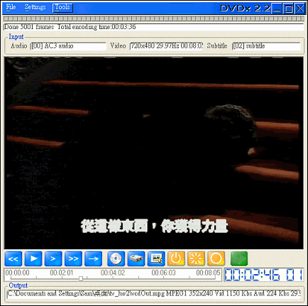
■ 3. DVDx -- VCD Format Finish
完成後確定並檢視輸出結果。
- Convert the first 5000 frames to SVDC
format (480 x 480 NTSC )
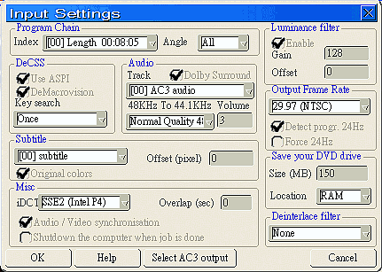
■ 1. DVDx -- SVCD Format Input Settings
DVDx 會自動抓取影片本身 Property，打開
『 Steeings / Input Setting 』確定
Output Frame Rate 設為 NTSC 格式
RAM Size(MB) 依照你 RAM 的大小來設定，
我的 RAM 有 320MB ，設為 150MB，來幫助轉檔。
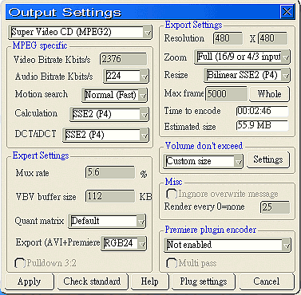
■ 2. DVDx -- SVCD Format Onput Settings
點選『 Steeings / Onput Setting 』 ，確定將
轉換格式為『 Super Video CD (MPEG2) 』
『 Resolution 』設成 480 X 480，
『 Max frame 』設成 5000 。
之後就回 DVDx ，按下 『 Encode 』，壓縮並存檔。
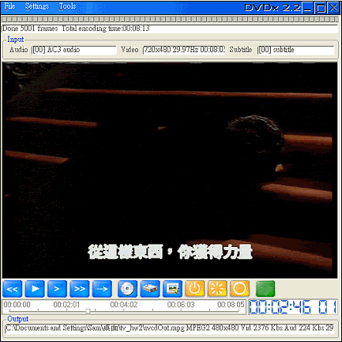
■ 3. DVDx -- SVCD Format Finish
完成後確定並檢視輸出結果。
- Burning your own VCD/SVCD and make
sure these disks can be read and play in your DVD player
- VCD
- 開啟 『 Nero / Nero - Burning Rom / CD / 編輯新的光碟 / 其他光碟格式 / Video CD 』。
- 將欲燒錄的檔案拖曳至 燒錄的 Buffer 區 ，開啟 燒錄 Dialog ，執行燒錄功能 。
- SVCD
- 開啟 『 Nero Express / 視訊/ 圖片 / Super Video CD ( SVCD) / 增加 』。
- 將所欲加入的 SVCD 影片加入 燒錄的 Buffer 區 。
- Click 『 Nero 』Buttom 開啟 燒錄 Dialog ，執行燒錄功能 。
- VCD
【 3. DVD to DivX(MPEG-4) Compression 】
- Using different software tools (DVDx,
FlasKMPEG, Virtual Dub, or Gordin Knot...),convert DVD's vob files to
DivX(MPEG-4)
- DVDx
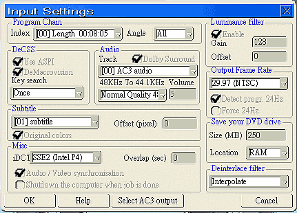
■ 1. DVDx -- DivX Format Input Settings
DVDx 會自動抓取影片本身 Property，打開
『 Steeings / Input Setting 』確定
Output Frame Rate 設為 NTSC 格式，
RAM Size(MB) 依照你 RAM 的大小來設定，
我的 RAM 有 320MB ，設為 250MB，來幫助轉檔。
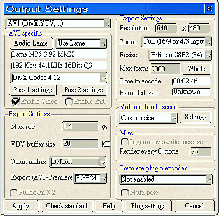
■ 2. DVDx -- DivX Format Output Settings
點選『 Steeings / Onput Setting 』 ，確定將
轉換格式為『 Super Video CD (MPEG2) 』
『 Resolution 』設成 640 X 480，
『 Max frame 』設成 5000 。
之後就回 DVDx ，按下 『 Encode 』，
壓縮並存檔。
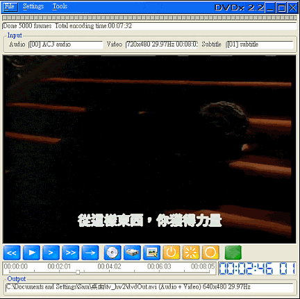
■ 3. DVDx -- DivX Format Finish
完成後確定並檢視輸出結果。
- FlasKMPEG
■ 1. FlaskMPEG -- Starting
點選 FlasKMPEG.exe 啟動 FlaskMPEG 。

■ 2. FlaskMPEG -- Loading File
選擇『 File / Open Media 』,打開欲處理的檔案，
選定後會將該 mpeg 檔的屬性顯示於 『Control Panel 』Window ( 如下圖 )。
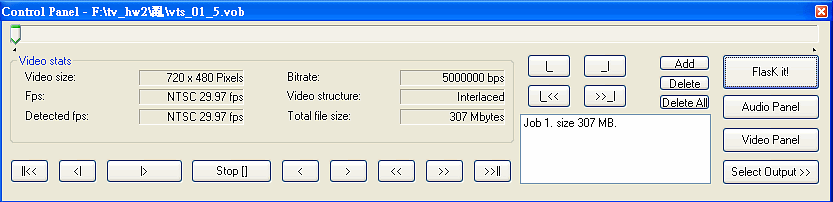
■ 3 . FlaskMPEG -- Vedio
選擇『 Options/ Advanced Options 』，設定 Vedio ，
調整 『 Frame Size 』的『Width 』和 『Height 』為 640 x 480。
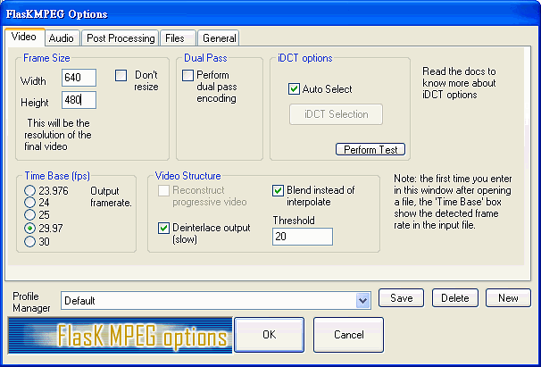
■ 4 . FlaskMPEG -- Audio
Audio Mode 為 『 Decode audio 』。
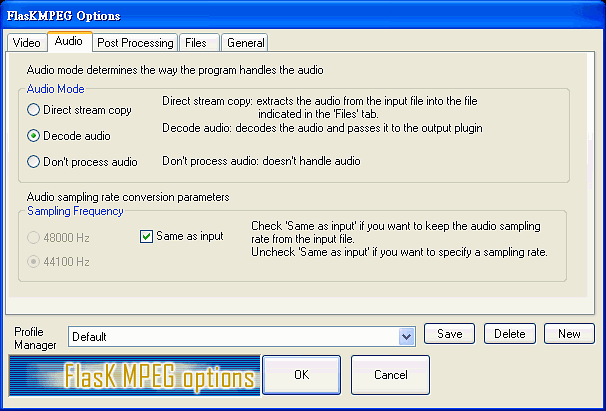
■ 5 . FlaskMPEG -- Post Processing
Resizing quality options 為 『 HQ bicubic Filtering 』。
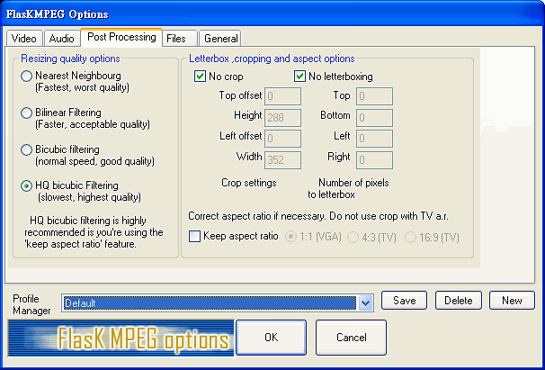
■ 6 . FlaskMPEG -- Files
Output files 輸出路徑設定為 『 C:\ flaskOut 』。
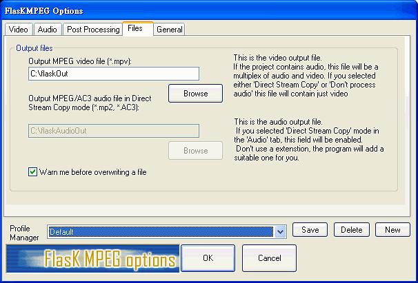
■ 7 . FlaskMPEG -- General
Compiling time 設定為 『 5000 』個 frames。
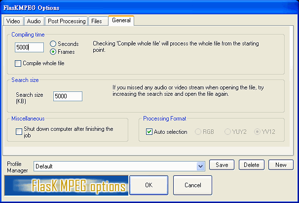
■ 8 . FlaskMPEG -- AVI Output Options
亂世佳人 ( Gone with the Wind ) 為 愛情文藝片 故將
Video Codecs 設為 『 DivX ;-) MPEG-4 Low- Motion 』，
Audio Codecs 設為 『 MPEG Layer-3 Codec (professional) 』，
Available formats for audio codec 設為 『 MPEG Layer-3 -112 kBit/s, 44,100 Hz, Stereo 』。
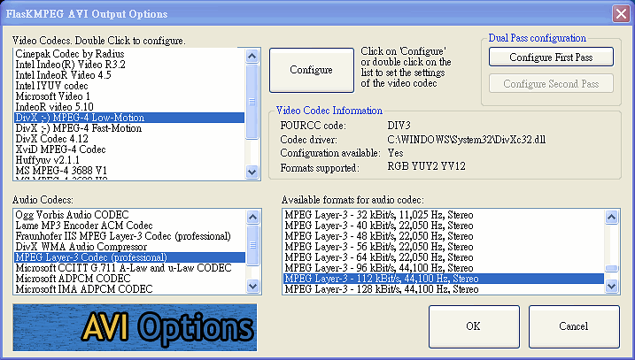
■ 9 . FlaskMPEG -- Low - Motion Clean Codec
進入 Low - Motion Clean Codec的並調整設定。
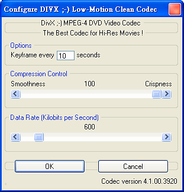
■ 10 . FlaskMPEG -- Progress
進行壓縮中，並顯示進度。壓縮後的檔案會存在之前設定的『 C:\ flaskOut 』。
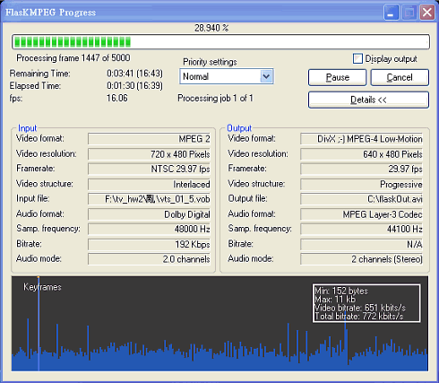
- DVDx
- Compare the Picture Quality and File
Size using different software tools in different setting
檢視輸出檔案
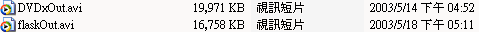
會發現 DVDx 和 FlasKMPEG 所轉出來的 DivX 檔案大小差不多。播放品質亦相差不多。
【 4. Sound Track Compression 】
- Extracting Sound Track in .WAV format
by Virtual Dub
- DVDx & VirtualDub
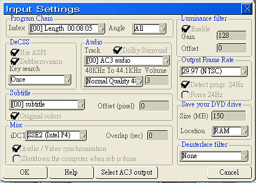
■ 1. DVDx -- Loading File & Input Settings
將 DVD 格式的檔案 載入 DVDx中，
並檢視設定如右圖。
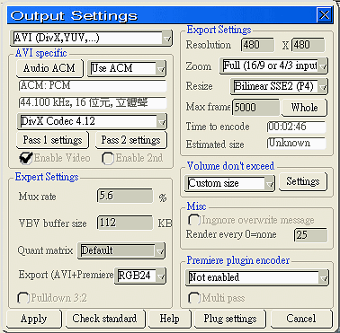
■ 2. DVDx --Output Setting I
將 DVD 轉成 DivX 格式時，需取出完整的語音檔，
若取出語音有壓縮過的影片檔，並將語音攫取出後，再作第二次壓縮時語音有可能會越壓越大。
所以在 『 AVI specific 』 選擇 『 Use ACM 』 ，接著點選 『 Audio ACM 』開啟 ACM 格式設定對話盒( Dialog )。
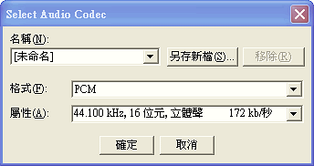
■ 3. DVDx --Output Setting II
選擇語音使用為 ACM : PCM格 式。
44.100kHz, 16位元,立體聲。
PCM 格式即為 完整且沒有經過破壞性壓縮處理的語音檔。
之後就回 DVDx ，按下 『 Encode 』，壓縮並存檔。

■ 4. VirtualDub -- Capture WAV File I
使用 『 File /Open Vedio File 』載入檔案，並點選
Audio 的 Source audio 與 Direct stream copy
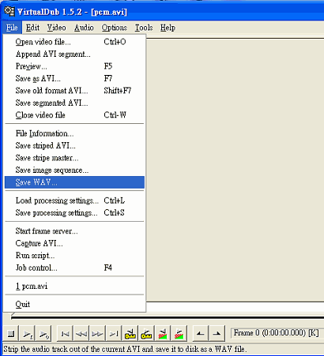
■ 5. VirtualDub -- Capture WAV File II
點選 『 File / Save WAV 』，
開啟 『 Save WAV File 』Dialog，
命名並將之存檔( .wav 格式 )。
- DVDx
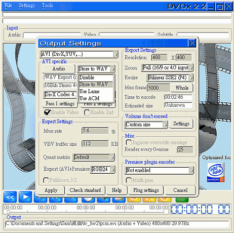
■ 1. DVDx -- Store to WAV
DVDx 可以直接攫取出 WAV檔，並不需再經過
VirtualDub 。
在 『 AVI specific 』 選擇 『 Store to WAV 』 ，
並回到 DVDx 主畫面 ，按下 『 Encode 』，即可只攫取出 WAV 檔案 。
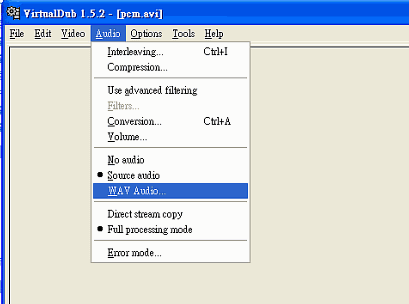
■ 2. VirtualDub -- WAV Audio
要壓縮時點選 『 Audio / WAV Audio 』
即可只將 WAV 檔 Load 到 VirtualDub。
- DVDx & VirtualDub
- Compress .WAV to .MP3 and Compare
the File Size and Sound Quality
- Compress .WAV to .MP3
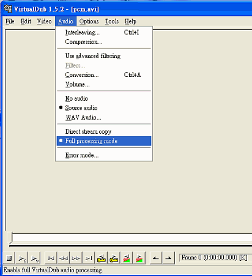
■ 1. VirtualDub -- Compress I
繼續上面使用 DVDx & VirtualDub 將WAV 檔取出之後，選擇
『 Audio/ Full processing mode 』，
進入壓縮程序。
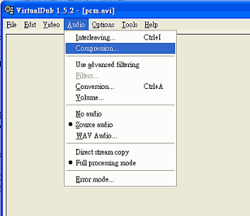
■ 2. VirtualDub -- Compress II
選擇『 Audio/ Compression 』，開啟
『 Select audio compression 』對話盒。
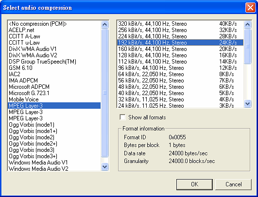
■ 3. VirtualDub -- Compress III
以 MP3 格式進行壓縮。
選擇以 『 MPEG-3 Layer-3 』中的
『 192kBit/s,44,100 Hz,Stereo 24KB/s 』
。
■ 4. VirtualDub -- Compress IIII
點選 『 File / Save WAV 』，
開啟 『 Save WAV File 』Dialog，
命名並將之存檔 ( MP3格式 )，
雖然此時的副檔名是 .WAV ，但實際是 MP3 格式破壞性壓縮的語音檔，
為了區分可自行將副檔名改成 .mp3，系統亦可認得並播放 。
- Compare the File Size and Sound Quality
檢視輸出檔案
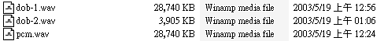
其中 dob-1.wav 與 pcm.wav 分別為 使用 DVDx 搭配 VirtualDub 和 只單單使用 DVDx 攫取語音檔的動作 ，
會發現 其檔案大小是相同的 ，都是 28,740 KB。
dob-2.wav 是 經過 MP3 格式進行壓縮後的檔案 ，會發現 只有 3,905 KB 縮小了 7.35 倍，但音質 卻和壓縮前差不多。
卻可節省了許多 Audio 檔案的儲存空間。
- Compress .WAV to .MP3
【 5. Appro -- Files 】
- 原始 DVD 檔案 : vts_01_5.vob ( 166.83 secs / 315,320 KB )
- 轉成 VCD 格式 (5000 Frames) : vcdOut.mpg ( 2:46 mins / 28,410KB )
- 轉成 SVCD 格式 (5000 Frames) : svcdOut .mpg ( 2:46 mins / 56,582KB )
- 轉成 DivX 格式 ( by DVDx) : DVDxOut.avi ( 2:46 mins / 19,971KB )
- 轉成 DivX 格式 ( by FlaskMPEG) : flaskOut.avi ( 2:46 mins / 16,758 KB )
- PCM 格式語音檔 : pcm.wav ( 2:46 secs / 28,740
KB )
- MP3 格式語音檔 : dob-2.wav ( 2:46 mins / 3,905KB
)